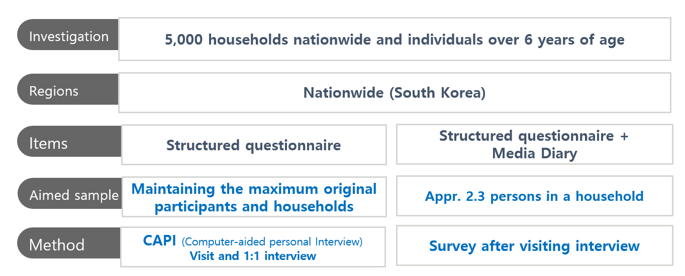
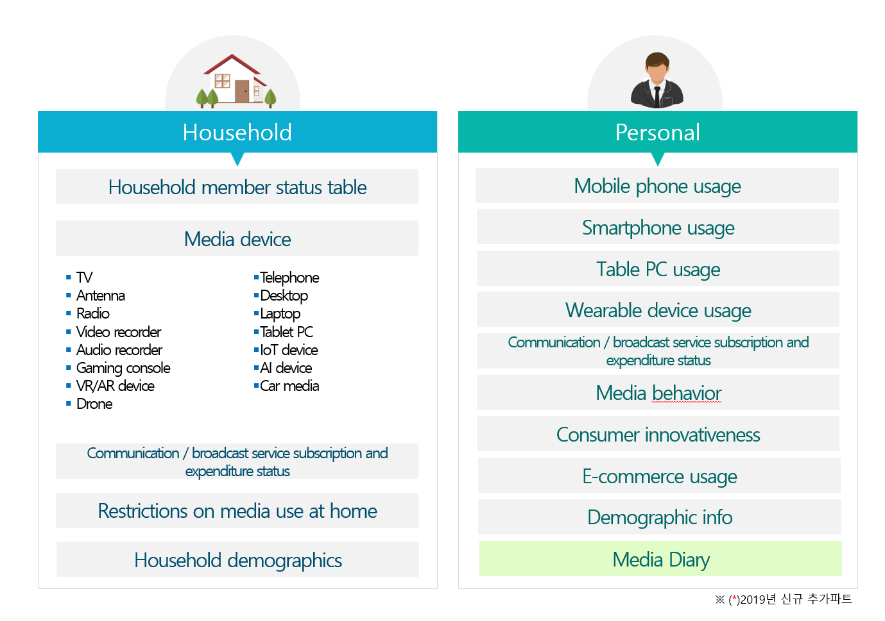
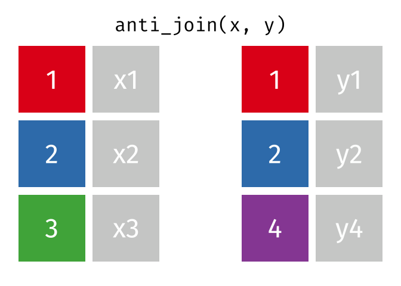

flowchart LR
A["Research Question<br>무엇이 변했는가?"] --> B["Tidy Data<br>관측단위와 key 확인"]
B --> C["Transform<br>행·열·값·형태 변환"]
C --> D["Audit<br>중복·결측·행 수 점검"]
D --> E["Evidence<br>표와 시각화"]
E --> F["Claim<br>가능한 주장과 한계"]
데이터 유형과 구조 (2)
tidyverse와 GenAI로 HCI 패널 데이터를 변환하고 검증하기
4주차 학습목표
Note
이번 주 학습을 마치면 다음을 할 수 있어야 합니다.
tidyverse의 핵심 철학과 주요 패키지의 역할을 설명한다.- 네이티브 파이프
|>를 사용해 읽기 쉬운 데이터 변환 과정을 작성한다. filter(),select(),arrange(),mutate(),summarise()를 연구질문에 맞게 사용한다.count(),distinct(),slice_*(),across()를 사용해 자료를 점검하고 요약한다.- 패널 데이터를 long format으로 구성하고
pivot_longer()와pivot_wider()로 형태를 바꾼다. - 조인 전에 key의 고유성과 매칭 관계를 점검하고,
join_by()와relationship을 사용해 안전하게 표를 결합한다. - 변환 전후의 행 수, 참여자 수, 결측, 중복을 감사하여 데이터 손실이나 행 증식을 발견한다.
- ChatGPT와 같은 GenAI를 코드 생성기보다 설계 검토자·디버깅 튜터·데이터 감사자로 활용한다.
오늘의 핵심 질문
같은 사람을 여러 해 추적한 자료에서, 누가 무엇을 바꾸었는지 어떻게 확인할까?
- 2017년 KT 이용자는 2018년과 2019년에 어떤 통신사를 이용했는가?
- 2017년 삼성 스마트폰 이용자는 이후에도 같은 브랜드를 사용했는가?
- 데이터 변환 과정에서 일부 참여자가 사라지거나 같은 사람이 여러 번 복제되지는 않았는가?
- 코드가 실행되었다는 사실만으로 결합과 요약이 정확하다고 말할 수 있는가?
Important
이번 주의 핵심은 함수를 많이 외우는 것이 아닙니다. 각 변환 뒤에 다음 세 질문을 반복하는 것입니다.
- 무엇이 한 행인가?
- 행 수와 참여자 수가 왜 이렇게 되었는가?
- 이 결과로 어떤 주장을 할 수 있고, 무엇은 아직 말할 수 없는가?
이번 주의 GenAI 활용 방식
3주차의 원칙을 이어갑니다.
Attempt → Ask → Test → Audit → Explain
| 단계 | 학생이 먼저 할 일 | GenAI에 맡길 수 있는 일 |
|---|---|---|
| Attempt | 관측단위, key, 예상 행 수를 적고 첫 코드를 작성 | 아직 사용하지 않음 |
| Ask | 문제와 제약을 구체적으로 설명 | 대안 코드, 점검 항목, 오류 원인 후보 제안 |
| Test | 모든 제안 코드를 R에서 직접 실행 | 실행 결과를 대신 만들어 달라고 하지 않음 |
| Audit | 행 수, 고유 ID, 결측, 중복, join 불일치를 확인 | 놓친 검증 절차를 reviewer처럼 지적 |
| Explain | 채택·수정·기각 이유를 자신의 말로 설명 | 설명의 모호함이나 과도한 주장 비판 |
좋은 질문의 기본 구조
나는 대학원 HCI 연구방법 수업에서 tidyverse를 배우고 있다.
자료는 동일한 참여자를 2017~2019년에 반복 측정한 패널 자료다.
한 행은 한 참여자의 한 연도 기록이며, key는 participant_id + year이다.
아래에 내가 작성한 코드와 실행 전후의 nrow(), n_distinct(), count() 결과를 제공하겠다.
1. 코드를 다시 쓰기 전에 변환 목적을 한 문장으로 요약하라.
2. 행이 사라지거나 증식할 수 있는 지점을 지적하라.
3. 확인할 R 코드를 최대 3개만 제안하라.
4. 자료에 없는 인과관계는 추론하지 말라.
5. 마지막에 내가 직접 설명해야 할 질문 하나를 제시하라.
민감한 연구자료를 입력하지 않기
실제 IRB 자료, 개인 식별자, 비공개 로그, API key를 공개형 GenAI에 입력하지 않습니다. 다음과 같은 최소 정보만으로도 대부분의 코드 상담이 가능합니다.
- 비식별·합성 예시 자료
glimpse()또는str()출력- 변수명과 코드북 일부
count(),summary(), 결측 개수- 최소 재현 코드와 실제 오류 메시지
Korea Media Panel: List에서 패널 데이터로
- 한국미디어패널조사는 동일한 개인과 가구를 반복 조사하여 미디어 기기, 통신서비스, 지출, 이용행태 등의 변화를 추적합니다.
- 이번 수업에서는 구조를 이해하기 쉽도록 만든 작은 toy dataset을 사용합니다.


- 수업용 데이터: List_KMP.RData
- 프로젝트 안의
data/폴더에 파일이 있는지 먼저 확인합니다.
패키지 준비
library(tidyverse)packageVersion("dplyr")[1] '1.1.4'packageVersion("tidyr")[1] '1.3.1'
Tip
install.packages("tidyverse")는 컴퓨터에 패키지를 한 번 설치할 때 사용합니다. library(tidyverse)는 현재 R 세션에서 패키지를 불러올 때마다 사용합니다.
.RData 파일을 불러올 때 확인할 것
load()는 파일 안의 객체를 현재 환경에 직접 생성합니다. 따라서 반환되는 객체 이름을 확인하는 습관이 중요합니다.
loaded_objects <- load("data/List_KMP.RData")
loaded_objects[1] "List.KMP"str(List.KMP, max.level = 1)List of 4
$ :'data.frame': 10 obs. of 11 variables:
$ :'data.frame': 10 obs. of 11 variables:
$ :'data.frame': 10 obs. of 11 variables:
$ :'data.frame': 10 obs. of 4 variables:
RData와 RDS의 차이
load()는 하나 이상의 객체를 현재 환경에 생성합니다.readRDS()는 한 객체를 반환하므로x <- readRDS("file.rds")처럼 이름을 명시할 수 있습니다.- 이번에는 제공된 파일 형식을 유지하여
load()를 사용하지만, 새 연구 프로젝트에서는 한 객체씩 저장하는.rds가 더 명시적인 경우가 많습니다.
List의 각 요소에 이름 붙이기
names(List.KMP)NULLnames(List.KMP) <- c("p17", "p18", "p19", "d19")
names(List.KMP)[1] "p17" "p18" "p19" "d19"각 요소의 크기와 클래스를 한 번에 확인해 봅시다.
kmp_inventory <- tibble(
table = names(List.KMP),
class = map_chr(List.KMP, ~ class(.x)[1]),
rows = map_int(List.KMP, nrow),
columns = map_int(List.KMP, ncol)
)
kmp_inventory# A tibble: 4 × 4
table class rows columns
<chr> <chr> <int> <int>
1 p17 data.frame 10 11
2 p18 data.frame 10 11
3 p19 data.frame 10 11
4 d19 data.frame 10 4[ ], [[ ]], $의 차이
| 표현 | 반환 결과 | 언제 사용하는가 |
|---|---|---|
List.KMP["p17"] |
길이 1의 list | 원래 list 구조를 유지하고 싶을 때 |
List.KMP[["p17"]] |
list 안의 data frame | 요소 자체를 꺼낼 때 |
List.KMP$p17 |
이름으로 꺼낸 data frame | 이름이 고정되어 있고 대화형 분석을 할 때 |
class(List.KMP["p17"])[1] "list"class(List.KMP[["p17"]])[1] "data.frame"p17_raw <- List.KMP[["p17"]]
p18_raw <- List.KMP[["p18"]]
p19_raw <- List.KMP[["p19"]]
d19_raw <- List.KMP[["d19"]]
glimpse(p17_raw)Rows: 10
Columns: 11
$ pid <dbl> 9920004, 12500003, 17350004, 17670001, 23860001, 244…
$ age <dbl> 9, 26, 12, 55, 70, 58, 50, 68, 39, 37
$ gender <fct> Male, Male, Female, Male, Male, Male, Male, Male, Ma…
$ Mobile.lv <fct> No Smartphone, LTE, LTE, LTE, No Smartphone, LTE, LT…
$ Telecom <fct> No Smartphone, KT, LG U+, SKT, No Smartphone, SKT, S…
$ Smartphone.brand <fct> No Smartphone, Samsung, Samsung, Samsung, No Smartph…
$ sp.mobile <dbl> 0, 42, 19, 38, 18, 65, 32, 58, 63, 54
$ sp.device <dbl> 0, 0, 0, 0, 0, 0, 0, 10, 0, 10
$ sp.online.content <dbl> 0, 53, 19, 38, 18, 65, 32, 68, 63, 114
$ sp.offline.contet <dbl> 10, 22, 0, 0, 0, 50, 36, 0, 25, 40
$ year <dbl> 2017, 2017, 2017, 2017, 2017, 2017, 2017, 2017, 2017…List는 서로 다른 연구 객체를 묶는 container
기존처럼 임의의 숫자와 행렬을 추가하기보다, 실제 연구 프로젝트의 bundle을 만들어 봅시다.
kmp_bundle <- list(
person_waves = List.KMP[c("p17", "p18", "p19")],
diary_2019 = List.KMP[["d19"]],
metadata = list(
source = "Korea Media Panel toy data",
person_unit = "one participant in one year",
diary_unit = "one participant in 2019"
)
)
str(kmp_bundle, max.level = 2)List of 3
$ person_waves:List of 3
..$ p17:'data.frame': 10 obs. of 11 variables:
..$ p18:'data.frame': 10 obs. of 11 variables:
..$ p19:'data.frame': 10 obs. of 11 variables:
$ diary_2019 :'data.frame': 10 obs. of 4 variables:
..$ pid : num [1:10] 9920004 12500003 17350004 17670001 23860001 ...
..$ Smarphone.time: num [1:10] 0 60 345 90 40 65 170 95 85 75
..$ SNS.time : num [1:10] 0 0 10 0 0 0 0 0 0 0
..$ year : num [1:10] 2019 2019 2019 2019 2019 ...
$ metadata :List of 3
..$ source : chr "Korea Media Panel toy data"
..$ person_unit: chr "one participant in one year"
..$ diary_unit : chr "one participant in 2019"kmp_bundle$metadata$person_unit[1] "one participant in one year"kmp_bundle[["person_waves"]][["p17"]] |> head(3) pid age gender Mobile.lv Telecom Smartphone.brand sp.mobile
1 9920004 9 Male No Smartphone No Smartphone No Smartphone 0
2 12500003 26 Male LTE KT Samsung 42
3 17350004 12 Female LTE LG U+ Samsung 19
sp.device sp.online.content sp.offline.contet year
1 0 0 10 2017
2 0 53 22 2017
3 0 19 0 2017
GenAI Checkpoint 1 — 자료구조를 먼저 설명하게 하기
원자료 대신 str(kmp_bundle, max.level = 2) 출력만 제공하고 다음처럼 질문합니다.
이 출력에서 확인되는 객체의 계층을 설명하라.
각 data frame의 관측단위와 가능한 key를 추정하되,
출력만으로 확정할 수 없는 부분은 반드시 질문으로 남겨라.
코드는 작성하지 말라.AI가 관측단위를 단정한다면, 코드북과 실제 수집 절차로 다시 확인합니다.
변수명을 정리하고 세 개 연도를 쌓기
현재 변수명은 원자료의 형식을 반영하지만, 분석 코드에서는 뜻이 분명한 snake_case 이름이 더 읽기 쉽습니다.
정리 함수를 한 번 정의하기
clean_kmp_person <- function(df) {
df |>
as_tibble() |>
rename(
participant_id = pid,
mobile_level = Mobile.lv,
telecom = Telecom,
smartphone_brand = Smartphone.brand,
spend_mobile = sp.mobile,
spend_device = sp.device,
spend_online_content = sp.online.content,
spend_offline_content = sp.offline.contet
) |>
mutate(
participant_id = as.character(participant_id),
across(
c(gender, mobile_level, telecom, smartphone_brand),
as.character
),
year = as.integer(year)
)
}
Note
함수는 같은 규칙을 여러 표에 반복 적용할 때 유용합니다. 세 연도에 서로 다른 정리 코드를 복사해 붙이면, 한 연도에만 수정이 빠지는 문제가 생기기 쉽습니다.
p17 <- clean_kmp_person(p17_raw)
p18 <- clean_kmp_person(p18_raw)
p19 <- clean_kmp_person(p19_raw)
glimpse(p17)Rows: 10
Columns: 11
$ participant_id <chr> "9920004", "12500003", "17350004", "17670001", "…
$ age <dbl> 9, 26, 12, 55, 70, 58, 50, 68, 39, 37
$ gender <chr> "Male", "Male", "Female", "Male", "Male", "Male"…
$ mobile_level <chr> "No Smartphone", "LTE", "LTE", "LTE", "No Smartp…
$ telecom <chr> "No Smartphone", "KT", "LG U+", "SKT", "No Smart…
$ smartphone_brand <chr> "No Smartphone", "Samsung", "Samsung", "Samsung"…
$ spend_mobile <dbl> 0, 42, 19, 38, 18, 65, 32, 58, 63, 54
$ spend_device <dbl> 0, 0, 0, 0, 0, 0, 0, 10, 0, 10
$ spend_online_content <dbl> 0, 53, 19, 38, 18, 65, 32, 68, 63, 114
$ spend_offline_content <dbl> 10, 22, 0, 0, 0, 50, 36, 0, 25, 40
$ year <int> 2017, 2017, 2017, 2017, 2017, 2017, 2017, 2017, …세 연도를 long-format panel로 결합하기
kmp_person <- List.KMP[c("p17", "p18", "p19")] |>
map(clean_kmp_person) |>
bind_rows(.id = "wave")
kmp_person |> glimpse()Rows: 30
Columns: 12
$ wave <chr> "p17", "p17", "p17", "p17", "p17", "p17", "p17",…
$ participant_id <chr> "9920004", "12500003", "17350004", "17670001", "…
$ age <dbl> 9, 26, 12, 55, 70, 58, 50, 68, 39, 37, 10, 27, 1…
$ gender <chr> "Male", "Male", "Female", "Male", "Male", "Male"…
$ mobile_level <chr> "No Smartphone", "LTE", "LTE", "LTE", "No Smartp…
$ telecom <chr> "No Smartphone", "KT", "LG U+", "SKT", "No Smart…
$ smartphone_brand <chr> "No Smartphone", "Samsung", "Samsung", "Samsung"…
$ spend_mobile <dbl> 0, 42, 19, 38, 18, 65, 32, 58, 63, 54, 0, 90, 20…
$ spend_device <dbl> 0, 0, 0, 0, 0, 0, 0, 10, 0, 10, 0, 60, 35, 0, 0,…
$ spend_online_content <dbl> 0, 53, 19, 38, 18, 65, 32, 68, 63, 114, 0, 359, …
$ spend_offline_content <dbl> 10, 22, 0, 0, 0, 50, 36, 0, 25, 40, 8, 120, 0, 0…
$ year <int> 2017, 2017, 2017, 2017, 2017, 2017, 2017, 2017, …현재 kmp_person의 관측단위는 다음과 같습니다.
한 행 = 한 참여자의 한 연도 기록
따라서 후보 key는 participant_id + year입니다.
Key를 감사하기
key_audit <- kmp_person |>
count(participant_id, year, name = "rows_per_key")
key_audit |>
filter(rows_per_key != 1)# A tibble: 0 × 3
# ℹ 3 variables: participant_id <chr>, year <int>, rows_per_key <int>결과가 0행이라면 이 toy dataset에서는 각 participant_id + year 조합이 한 번씩만 나타납니다.
kmp_person |>
summarise(
rows = n(),
participants = n_distinct(participant_id),
years = n_distinct(year),
duplicate_keys = sum(duplicated(pick(participant_id, year)))
)# A tibble: 1 × 4
rows participants years duplicate_keys
<int> <int> <int> <int>
1 30 10 3 02019 diary 자료도 정리하기
원자료의 Smarphone.time에는 철자 오류가 있으므로 분석 초기에 고칩니다.
kmp_diary <- d19_raw |>
as_tibble() |>
rename(
participant_id = pid,
smartphone_time = Smarphone.time,
sns_time = SNS.time
) |>
mutate(
participant_id = as.character(participant_id),
year = as.integer(year)
)
kmp_diary |> glimpse()Rows: 10
Columns: 4
$ participant_id <chr> "9920004", "12500003", "17350004", "17670001", "238600…
$ smartphone_time <dbl> 0, 60, 345, 90, 40, 65, 170, 95, 85, 75
$ sns_time <dbl> 0, 0, 10, 0, 0, 0, 0, 0, 0, 0
$ year <int> 2019, 2019, 2019, 2019, 2019, 2019, 2019, 2019, 2019, …
Important
변수명을 바꾸는 것은 값의 의미를 바꾸는 일이 아닙니다. smartphone_time이 분인지, 하루 평균인지, 특정 조사일의 기록인지는 반드시 코드북에서 확인해야 합니다.
Introduction to the tidyverse
tidyverse는 같은 데이터 표현과 일관된 함수 설계를 공유하는 R 패키지 모음입니다. Base R을 대체하는 별도의 언어가 아니라, 데이터 분석의 반복 작업을 일관된 문법으로 표현하도록 돕습니다.
| 패키지 | 주요 역할 | 이번 주 사용 |
|---|---|---|
tibble |
현대적인 표 형태의 객체 | as_tibble(), 출력과 구조 확인 |
dplyr |
행·열·값·그룹·표의 변환 | filter(), mutate(), summarise(), joins |
tidyr |
tidy data와 자료 형태 변환 | pivot_longer(), pivot_wider() |
readr |
CSV 등 직사각형 자료 불러오기 | 이후 실제 자료 import |
purrr |
list와 함수 반복 적용 | map(), map_int(), map_chr() |
ggplot2 |
문법 기반 시각화 | 이번 주에는 결과 점검용으로만 사용 |
stringr |
문자열 처리 | 이후 텍스트 정리 |
forcats |
factor 처리 | 이후 범주 순서와 레이블 정리 |
lubridate |
날짜와 시간 처리 | 이후 로그와 시계열 자료 |
핵심 정신: 동사로 데이터에 질문하기
| 질문 | 함수 |
|---|---|
| 어떤 행을 남길까? | filter(), slice_*(), distinct() |
| 어떤 열을 사용할까? | select(), pull(), relocate() |
| 순서를 어떻게 바꿀까? | arrange() |
| 어떤 변수를 새로 만들까? | mutate(), case_when() |
| 여러 행을 어떻게 요약할까? | summarise(), count() |
| 그룹별로 같은 계산을 할까? | .by, group_by() |
| wide와 long을 어떻게 오갈까? | pivot_longer(), pivot_wider() |
| 다른 표와 어떻게 연결할까? | *_join() |
Pipe: 분석 과정을 왼쪽에서 오른쪽으로 읽기
현재 tidyverse 교육에서는 R의 네이티브 파이프 |>를 기본으로 사용합니다.
kmp_person |>
filter(year == 2017, telecom == "KT") |>
select(participant_id, telecom, smartphone_brand, spend_mobile)# A tibble: 3 × 4
participant_id telecom smartphone_brand spend_mobile
<chr> <chr> <chr> <dbl>
1 12500003 KT Samsung 42
2 59570001 KT Samsung 63
3 65840001 KT LG 54위 코드는 다음처럼 읽습니다.
kmp_person에서 → 2017년 KT 이용자를 남기고 → 필요한 변수만 선택한다.
중첩 코드와 파이프 비교
# 중첩된 형태
select(
filter(kmp_person, year == 2017, telecom == "KT"),
participant_id,
telecom,
smartphone_brand
)# A tibble: 3 × 3
participant_id telecom smartphone_brand
<chr> <chr> <chr>
1 12500003 KT Samsung
2 59570001 KT Samsung
3 65840001 KT LG # 파이프 형태
kmp_person |>
filter(year == 2017, telecom == "KT") |>
select(participant_id, telecom, smartphone_brand)# A tibble: 3 × 3
participant_id telecom smartphone_brand
<chr> <chr> <chr>
1 12500003 KT Samsung
2 59570001 KT Samsung
3 65840001 KT LG
왜
%>% 대신 |>를 사용하는가?
오래된 교재와 코드에서는 %>%를 자주 볼 수 있습니다. 두 파이프는 단순한 경우 비슷하게 작동하지만, |>는 R 자체에 포함되어 어떤 패키지의 함수에도 사용할 수 있습니다. 이 수업에서는 새 코드에 |>를 사용하고, %>%는 기존 코드를 읽을 수 있는 수준으로 이해합니다.
파이프를 쓰지 않는 편이 나은 경우
- 두 개 이상의 주요 객체를 동시에 조작할 때
- 중간 결과가 연구적으로 중요한 의미를 가지며 이름을 붙여 보존해야 할 때
- 한 줄짜리 간단한 계산이 오히려 더 복잡해질 때
예를 들어 baseline cohort와 follow-up table은 각각 이름을 붙인 뒤 join하는 편이 더 명확합니다.
Tidy data: 코드보다 먼저 관측단위를 정하기
Tidy data의 기본 원칙은 다음과 같습니다.
- 각 변수는 하나의 열이다.
- 각 관측은 하나의 행이다.
- 각 값은 하나의 셀이다.
그러나 가장 중요한 질문은 무엇을 하나의 관측으로 정의할 것인가입니다.
| 자료 | 한 행의 의미 | 후보 key |
|---|---|---|
p17, p18, p19 |
한 참여자의 한 연도 개인자료 | participant_id (각 연도 안에서) |
kmp_person |
한 참여자의 한 연도 개인자료 | participant_id + year |
kmp_diary |
한 참여자의 2019년 미디어 다이어리 | participant_id + year |
| 반복 과업 로그 | 한 참여자의 한 조건·한 과업 시행 | participant_id + condition + task + trial |
Warning
행 수는 표본 수와 같지 않을 수 있습니다. kmp_person에는 30행이 있지만 독립적인 참여자는 10명입니다. 반복측정 자료에서 nrow()만 보고 표본 크기를 말하면 안 됩니다.
kmp_person |>
summarise(
rows = n(),
unique_participants = n_distinct(participant_id),
participant_years = n_distinct(interaction(participant_id, year))
)# A tibble: 1 × 3
rows unique_participants participant_years
<int> <int> <int>
1 30 10 301. 행을 다루는 동사
filter(): 조건을 만족하는 행 남기기
# 2017년 KT 이용자
kmp_person |>
filter(year == 2017, telecom == "KT")# A tibble: 3 × 12
wave participant_id age gender mobile_level telecom smartphone_brand
<chr> <chr> <dbl> <chr> <chr> <chr> <chr>
1 p17 12500003 26 Male LTE KT Samsung
2 p17 59570001 39 Male LTE KT Samsung
3 p17 65840001 37 Female LTE-A KT LG
# ℹ 5 more variables: spend_mobile <dbl>, spend_device <dbl>,
# spend_online_content <dbl>, spend_offline_content <dbl>, year <int># 2019년 Samsung 또는 Apple 이용자
kmp_person |>
filter(
year == 2019,
smartphone_brand %in% c("Samsung", "Apple")
)# A tibble: 6 × 12
wave participant_id age gender mobile_level telecom smartphone_brand
<chr> <chr> <dbl> <chr> <chr> <chr> <chr>
1 p19 12500003 28 Male LTE LG U+ Apple
2 p19 17350004 14 Female LTE-A LG U+ Samsung
3 p19 17670001 57 Male LTE SKT Samsung
4 p19 23860001 72 Male LTE KT Samsung
5 p19 24450001 60 Male LTE SKT Samsung
6 p19 27570001 52 Male LTE SKT Samsung
# ℹ 5 more variables: spend_mobile <dbl>, spend_device <dbl>,
# spend_online_content <dbl>, spend_offline_content <dbl>, year <int># 성인이면서 이동통신 지출이 50 이상인 관측
kmp_person |>
filter(age >= 18, spend_mobile >= 50)# A tibble: 11 × 12
wave participant_id age gender mobile_level telecom smartphone_brand
<chr> <chr> <dbl> <chr> <chr> <chr> <chr>
1 p17 24450001 58 Male LTE SKT Samsung
2 p17 53620001 68 Male LTE SKT Samsung
3 p17 59570001 39 Male LTE KT Samsung
4 p17 65840001 37 Female LTE-A KT LG
5 p18 12500003 27 Male LTE-A LG U+ Samsung
6 p18 24450001 59 Male LTE LG U+ LG
7 p18 65840001 38 Female LTE-A KT LG
8 p19 12500003 28 Male LTE LG U+ Apple
9 p19 24450001 60 Male LTE SKT Samsung
10 p19 53620001 70 Male LTE KT LG
11 p19 59570001 41 Male LTE-A LG U+ LG
# ℹ 5 more variables: spend_mobile <dbl>, spend_device <dbl>,
# spend_online_content <dbl>, spend_offline_content <dbl>, year <int>여러 조건을 쉼표로 나열하면 모두 만족해야 하므로 &와 같은 의미입니다.
kmp_person |>
filter(year == 2019, telecom == "KT")# A tibble: 2 × 12
wave participant_id age gender mobile_level telecom smartphone_brand
<chr> <chr> <dbl> <chr> <chr> <chr> <chr>
1 p19 23860001 72 Male LTE KT Samsung
2 p19 53620001 70 Male LTE KT LG
# ℹ 5 more variables: spend_mobile <dbl>, spend_device <dbl>,
# spend_online_content <dbl>, spend_offline_content <dbl>, year <int>kmp_person |>
filter(year == 2019 & telecom == "KT")# A tibble: 2 × 12
wave participant_id age gender mobile_level telecom smartphone_brand
<chr> <chr> <dbl> <chr> <chr> <chr> <chr>
1 p19 23860001 72 Male LTE KT Samsung
2 p19 53620001 70 Male LTE KT LG
# ℹ 5 more variables: spend_mobile <dbl>, spend_device <dbl>,
# spend_online_content <dbl>, spend_offline_content <dbl>, year <int>결측값은 별도로 다루기
kmp_person |>
filter(is.na(spend_mobile))# A tibble: 0 × 12
# ℹ 12 variables: wave <chr>, participant_id <chr>, age <dbl>, gender <chr>,
# mobile_level <chr>, telecom <chr>, smartphone_brand <chr>,
# spend_mobile <dbl>, spend_device <dbl>, spend_online_content <dbl>,
# spend_offline_content <dbl>, year <int>kmp_person |>
filter(!is.na(spend_mobile))# A tibble: 30 × 12
wave participant_id age gender mobile_level telecom smartphone_brand
<chr> <chr> <dbl> <chr> <chr> <chr> <chr>
1 p17 9920004 9 Male No Smartphone No Smartpho… No Smartphone
2 p17 12500003 26 Male LTE KT Samsung
3 p17 17350004 12 Female LTE LG U+ Samsung
4 p17 17670001 55 Male LTE SKT Samsung
5 p17 23860001 70 Male No Smartphone No Smartpho… No Smartphone
6 p17 24450001 58 Male LTE SKT Samsung
7 p17 27570001 50 Male LTE SKT Samsung
8 p17 53620001 68 Male LTE SKT Samsung
9 p17 59570001 39 Male LTE KT Samsung
10 p17 65840001 37 Female LTE-A KT LG
# ℹ 20 more rows
# ℹ 5 more variables: spend_mobile <dbl>, spend_device <dbl>,
# spend_online_content <dbl>, spend_offline_content <dbl>, year <int>
Warning
x == NA는 결측 여부를 검사하지 못합니다. is.na(x)를 사용합니다. 또한 filter()는 조건 결과가 NA인 행을 남기지 않으므로, 결측을 보존해야 한다면 조건을 명시적으로 작성해야 합니다.
distinct(): 고유한 값과 중복 확인
kmp_person |>
distinct(telecom)# A tibble: 4 × 1
telecom
<chr>
1 No Smartphone
2 KT
3 LG U+
4 SKT kmp_person |>
distinct(participant_id, year) |>
count(year)# A tibble: 3 × 2
year n
<int> <int>
1 2017 10
2 2018 10
3 2019 10중복 key를 지우기 전에 먼저 원인을 확인합니다.
kmp_person |>
count(participant_id, year) |>
filter(n > 1)# A tibble: 0 × 3
# ℹ 3 variables: participant_id <chr>, year <int>, n <int>
distinct()는 중복 문제를 해결하는 마법의 함수가 아닙니다. 왜 중복이 생겼는지 모른 채 행을 제거하면 실제 반복관측을 잃을 수 있습니다.
slice_*(): 위치, 표본, 상위·하위 행 선택
kmp_person |>
slice_head(n = 5)# A tibble: 5 × 12
wave participant_id age gender mobile_level telecom smartphone_brand
<chr> <chr> <dbl> <chr> <chr> <chr> <chr>
1 p17 9920004 9 Male No Smartphone No Smartphone No Smartphone
2 p17 12500003 26 Male LTE KT Samsung
3 p17 17350004 12 Female LTE LG U+ Samsung
4 p17 17670001 55 Male LTE SKT Samsung
5 p17 23860001 70 Male No Smartphone No Smartphone No Smartphone
# ℹ 5 more variables: spend_mobile <dbl>, spend_device <dbl>,
# spend_online_content <dbl>, spend_offline_content <dbl>, year <int>set.seed(2026)
kmp_person |>
slice_sample(n = 5)# A tibble: 5 × 12
wave participant_id age gender mobile_level telecom smartphone_brand
<chr> <chr> <dbl> <chr> <chr> <chr> <chr>
1 p19 59570001 41 Male LTE-A LG U+ LG
2 p19 23860001 72 Male LTE KT Samsung
3 p17 9920004 9 Male No Smartphone No Smartphone No Smartphone
4 p17 24450001 58 Male LTE SKT Samsung
5 p18 17350004 13 Female LTE-A LG U+ LG
# ℹ 5 more variables: spend_mobile <dbl>, spend_device <dbl>,
# spend_online_content <dbl>, spend_offline_content <dbl>, year <int>kmp_person |>
filter(year == 2019) |>
slice_max(
order_by = spend_mobile,
n = 3,
with_ties = FALSE
)# A tibble: 3 × 12
wave participant_id age gender mobile_level telecom smartphone_brand
<chr> <chr> <dbl> <chr> <chr> <chr> <chr>
1 p19 24450001 60 Male LTE SKT Samsung
2 p19 59570001 41 Male LTE-A LG U+ LG
3 p19 12500003 28 Male LTE LG U+ Apple
# ℹ 5 more variables: spend_mobile <dbl>, spend_device <dbl>,
# spend_online_content <dbl>, spend_offline_content <dbl>, year <int>
기존 코드 읽기
sample_n()과sample_frac()대신slice_sample()을 사용합니다.top_n()대신slice_max()또는slice_min()을 사용합니다.- 무작위 표본을 재현하려면
set.seed()를 기록합니다.
arrange(): 행의 순서 바꾸기
kmp_person |>
arrange(year, desc(spend_mobile)) |>
select(participant_id, year, spend_mobile) |>
slice_head(n = 10)# A tibble: 10 × 3
participant_id year spend_mobile
<chr> <int> <dbl>
1 24450001 2017 65
2 59570001 2017 63
3 53620001 2017 58
4 65840001 2017 54
5 12500003 2017 42
6 17670001 2017 38
7 27570001 2017 32
8 17350004 2017 19
9 23860001 2017 18
10 9920004 2017 0행의 순서를 바꾸는 것은 자료의 값이나 표본을 바꾸지 않습니다. 다만 first()나 lag()처럼 순서에 의존하는 함수 전에는 어떤 기준으로 정렬했는지 명시해야 합니다.
2. 열을 다루는 동사
select(): data frame으로 열 선택
kmp_person |>
select(participant_id, year, telecom, smartphone_brand)# A tibble: 30 × 4
participant_id year telecom smartphone_brand
<chr> <int> <chr> <chr>
1 9920004 2017 No Smartphone No Smartphone
2 12500003 2017 KT Samsung
3 17350004 2017 LG U+ Samsung
4 17670001 2017 SKT Samsung
5 23860001 2017 No Smartphone No Smartphone
6 24450001 2017 SKT Samsung
7 27570001 2017 SKT Samsung
8 53620001 2017 SKT Samsung
9 59570001 2017 KT Samsung
10 65840001 2017 KT LG
# ℹ 20 more rowskmp_person |>
select(participant_id, year, starts_with("spend_"))# A tibble: 30 × 6
participant_id year spend_mobile spend_device spend_online_content
<chr> <int> <dbl> <dbl> <dbl>
1 9920004 2017 0 0 0
2 12500003 2017 42 0 53
3 17350004 2017 19 0 19
4 17670001 2017 38 0 38
5 23860001 2017 18 0 18
6 24450001 2017 65 0 65
7 27570001 2017 32 0 32
8 53620001 2017 58 10 68
9 59570001 2017 63 0 63
10 65840001 2017 54 10 114
# ℹ 20 more rows
# ℹ 1 more variable: spend_offline_content <dbl>유용한 tidy-select helper:
starts_with("spend_")ends_with("_time")contains("brand")where(is.numeric)all_of(variable_names)everything()
pull(): 한 열을 vector로 꺼내기
kmp_person |>
pull(spend_mobile) |>
class()[1] "numeric"kmp_person |>
select(spend_mobile) |>
class()[1] "tbl_df" "tbl" "data.frame"pull()은 vector를 반환합니다.select()는 열이 하나여도 tibble을 반환합니다.
rename()과 relocate()
kmp_person |>
rename(mobile_spending = spend_mobile) |>
relocate(wave, year, participant_id)# A tibble: 30 × 12
wave year participant_id age gender mobile_level telecom smartphone_brand
<chr> <int> <chr> <dbl> <chr> <chr> <chr> <chr>
1 p17 2017 9920004 9 Male No Smartpho… No Sma… No Smartphone
2 p17 2017 12500003 26 Male LTE KT Samsung
3 p17 2017 17350004 12 Female LTE LG U+ Samsung
4 p17 2017 17670001 55 Male LTE SKT Samsung
5 p17 2017 23860001 70 Male No Smartpho… No Sma… No Smartphone
6 p17 2017 24450001 58 Male LTE SKT Samsung
7 p17 2017 27570001 50 Male LTE SKT Samsung
8 p17 2017 53620001 68 Male LTE SKT Samsung
9 p17 2017 59570001 39 Male LTE KT Samsung
10 p17 2017 65840001 37 Female LTE-A KT LG
# ℹ 20 more rows
# ℹ 4 more variables: mobile_spending <dbl>, spend_device <dbl>,
# spend_online_content <dbl>, spend_offline_content <dbl>변수명을 바꾸거나 위치를 옮겨도 값 자체는 변하지 않습니다. 그래도 분석 전후에 glimpse()로 결과를 확인합니다.
3. 값을 만들고 변환하는 동사
mutate(): 새 변수 만들기
kmp_enriched <- kmp_person |>
mutate(
any_spending_missing = if_any(
c(
spend_mobile,
spend_device,
spend_online_content,
spend_offline_content
),
is.na
),
spend_total =
spend_mobile +
spend_device +
spend_online_content +
spend_offline_content
) |>
relocate(spend_total, any_spending_missing, .after = spend_offline_content)
kmp_enriched |>
select(participant_id, year, starts_with("spend_"), any_spending_missing) |>
head()# A tibble: 6 × 8
participant_id year spend_mobile spend_device spend_online_content
<chr> <int> <dbl> <dbl> <dbl>
1 9920004 2017 0 0 0
2 12500003 2017 42 0 53
3 17350004 2017 19 0 19
4 17670001 2017 38 0 38
5 23860001 2017 18 0 18
6 24450001 2017 65 0 65
# ℹ 3 more variables: spend_offline_content <dbl>, spend_total <dbl>,
# any_spending_missing <lgl>
Warning
spend_total을 만들기 전에 네 지출 변수가 서로 중복되지 않는 항목인지 코드북에서 확인해야 합니다. 계산이 가능하다는 사실과 개념적으로 합산해도 된다는 사실은 다릅니다.
case_when(): 여러 조건으로 범주 만들기
kmp_enriched <- kmp_enriched |>
mutate(
age_group = case_when(
is.na(age) ~ NA_character_,
age < 18 ~ "minor",
age < 65 ~ "adult",
TRUE ~ "older_adult"
)
)
kmp_enriched |>
count(year, age_group)# A tibble: 9 × 3
year age_group n
<int> <chr> <int>
1 2017 adult 6
2 2017 minor 2
3 2017 older_adult 2
4 2018 adult 6
5 2018 minor 2
6 2018 older_adult 2
7 2019 adult 6
8 2019 minor 2
9 2019 older_adult 2연령 기준은 자연적으로 주어진 사실이 아니라 분석 목적에 따라 정한 규칙입니다. 논문에서는 범주 기준과 근거를 기록합니다.
across(): 여러 열에 같은 변환 적용하기
kmp_enriched |>
summarise(
across(
starts_with("spend_"),
~ sum(is.na(.x)),
.names = "missing_{.col}"
)
)# A tibble: 1 × 5
missing_spend_mobile missing_spend_device missing_spend_online_content
<int> <int> <int>
1 0 0 0
# ℹ 2 more variables: missing_spend_offline_content <int>,
# missing_spend_total <int>여러 수치 변수의 평균과 표준편차를 한 번에 계산할 수도 있습니다.
kmp_enriched |>
summarise(
across(
starts_with("spend_"),
list(
mean = ~ mean(.x, na.rm = TRUE),
sd = ~ sd(.x, na.rm = TRUE)
),
.names = "{.col}_{.fn}"
)
)# A tibble: 1 × 10
spend_mobile_mean spend_mobile_sd spend_device_mean spend_device_sd
<dbl> <dbl> <dbl> <dbl>
1 41.5 23.6 7.57 13.6
# ℹ 6 more variables: spend_online_content_mean <dbl>,
# spend_online_content_sd <dbl>, spend_offline_content_mean <dbl>,
# spend_offline_content_sd <dbl>, spend_total_mean <dbl>,
# spend_total_sd <dbl>
기존 코드 읽기
summarise_all(), summarise_at(), summarise_if()와 같은 scoped verb는 현재 across()로 대체하여 작성합니다.
GenAI Checkpoint 2 — 변환 코드 감사받기
먼저 spend_total과 age_group을 직접 만든 뒤 다음처럼 요청합니다.
아래 mutate() 코드를 데이터 감사자의 관점에서 검토하라.
문법을 다시 쓰기 전에 다음을 표로 정리하라.
1. 새 변수의 개념적 가정
2. 결측값이 있을 때의 동작
3. 경계값에서의 동작
4. 확인해야 할 최소 테스트
5. 잘못된 결과가 조용히 생성될 가능성AI가 제안한 검사를 R에서 실행하고, 채택하거나 기각한 이유를 기록합니다.
4. 요약과 그룹
전체 자료 요약
kmp_enriched |>
summarise(
observations = n(),
participants = n_distinct(participant_id),
mean_mobile_spending = mean(spend_mobile, na.rm = TRUE),
median_mobile_spending = median(spend_mobile, na.rm = TRUE),
missing_mobile_spending = sum(is.na(spend_mobile))
)# A tibble: 1 × 5
observations participants mean_mobile_spending median_mobile_spending
<int> <int> <dbl> <dbl>
1 30 10 41.5 38.5
# ℹ 1 more variable: missing_mobile_spending <int>count(): 범주별 행 수
kmp_enriched |>
count(year, telecom, sort = TRUE)# A tibble: 12 × 3
year telecom n
<int> <chr> <int>
1 2017 SKT 4
2 2019 LG U+ 4
3 2017 KT 3
4 2018 KT 3
5 2018 LG U+ 3
6 2019 SKT 3
7 2017 No Smartphone 2
8 2018 No Smartphone 2
9 2018 SKT 2
10 2019 KT 2
11 2017 LG U+ 1
12 2019 No Smartphone 1kmp_enriched |>
filter(year == 2017) |>
count(smartphone_brand, sort = TRUE)# A tibble: 3 × 2
smartphone_brand n
<chr> <int>
1 Samsung 7
2 No Smartphone 2
3 LG 1.by: 한 번의 연산에만 적용하는 그룹
kmp_enriched |>
summarise(
observations = n(),
participants = n_distinct(participant_id),
mean_mobile_spending = mean(spend_mobile, na.rm = TRUE),
sd_mobile_spending = sd(spend_mobile, na.rm = TRUE),
.by = year
)# A tibble: 3 × 5
year observations participants mean_mobile_spending sd_mobile_spending
<int> <int> <int> <dbl> <dbl>
1 2017 10 10 38.9 21.8
2 2018 10 10 42.7 27.0
3 2019 10 10 42.8 24.1.by의 결과는 다시 ungrouped data가 됩니다. 한 번의 요약에는 간결하지만, 여러 단계에서 같은 그룹을 계속 사용할 때는 group_by()가 더 자연스러울 수 있습니다.
kmp_enriched |>
group_by(year) |>
summarise(
across(
starts_with("spend_"),
~ mean(.x, na.rm = TRUE),
.names = "mean_{.col}"
),
.groups = "drop"
)# A tibble: 3 × 6
year mean_spend_mobile mean_spend_device mean_spend_online_content
<int> <dbl> <dbl> <dbl>
1 2017 38.9 2 47
2 2018 42.7 14.2 77.8
3 2019 42.8 6.5 49.3
# ℹ 2 more variables: mean_spend_offline_content <dbl>, mean_spend_total <dbl>n()과 n_distinct()를 함께 보기
kmp_enriched |>
summarise(
rows = n(),
participants = n_distinct(participant_id),
.by = year
)# A tibble: 3 × 3
year rows participants
<int> <int> <int>
1 2017 10 10
2 2018 10 10
3 2019 10 10반복측정이나 로그 자료에서는 두 값이 다를 수 있습니다. 분석 보고 시 무엇을 N으로 제시하는지 분명히 해야 합니다.
5. Wide와 long 사이를 이동하기
지출 변수를 long format으로 바꾸기
kmp_spending_long <- kmp_enriched |>
select(
participant_id,
year,
telecom,
smartphone_brand,
spend_mobile:spend_offline_content,
spend_total
) |>
pivot_longer(
cols = c(spend_mobile:spend_offline_content, spend_total),
names_to = "spending_type",
names_prefix = "spend_",
values_to = "amount"
)
kmp_spending_long |>
glimpse()Rows: 150
Columns: 6
$ participant_id <chr> "9920004", "9920004", "9920004", "9920004", "9920004"…
$ year <int> 2017, 2017, 2017, 2017, 2017, 2017, 2017, 2017, 2017,…
$ telecom <chr> "No Smartphone", "No Smartphone", "No Smartphone", "N…
$ smartphone_brand <chr> "No Smartphone", "No Smartphone", "No Smartphone", "N…
$ spending_type <chr> "mobile", "device", "online_content", "offline_conten…
$ amount <dbl> 0, 0, 0, 10, 10, 42, 0, 53, 22, 117, 19, 0, 19, 0, 38…long format에서는 지출 유형이 열 이름에 흩어져 있지 않고 spending_type이라는 하나의 변수로 표현됩니다.
kmp_spending_long |>
summarise(
n = sum(!is.na(amount)),
mean_amount = mean(amount, na.rm = TRUE),
median_amount = median(amount, na.rm = TRUE),
.by = c(year, spending_type)
)# A tibble: 15 × 5
year spending_type n mean_amount median_amount
<int> <chr> <int> <dbl> <dbl>
1 2017 mobile 10 38.9 40
2 2017 device 10 2 0
3 2017 online_content 10 47 45.5
4 2017 offline_content 10 18.3 16
5 2017 total 10 106. 108.
6 2018 mobile 10 42.7 37.5
7 2018 device 10 14.2 10
8 2018 online_content 10 77.8 48
9 2018 offline_content 10 26 4
10 2018 total 10 161. 96
11 2019 mobile 10 42.8 40
12 2019 device 10 6.5 0
13 2019 online_content 10 49.3 44.5
14 2019 offline_content 10 23.5 20
15 2019 total 10 122. 134 통신사를 연도별 열로 넓히기
telecom_wide <- kmp_person |>
select(participant_id, year, telecom) |>
pivot_wider(
names_from = year,
values_from = telecom,
names_prefix = "telecom_"
)
telecom_wide# A tibble: 10 × 4
participant_id telecom_2017 telecom_2018 telecom_2019
<chr> <chr> <chr> <chr>
1 9920004 No Smartphone No Smartphone No Smartphone
2 12500003 KT LG U+ LG U+
3 17350004 LG U+ LG U+ LG U+
4 17670001 SKT KT SKT
5 23860001 No Smartphone No Smartphone KT
6 24450001 SKT LG U+ SKT
7 27570001 SKT SKT SKT
8 53620001 SKT KT KT
9 59570001 KT SKT LG U+
10 65840001 KT KT LG U+ telecom_wide |>
mutate(
changed_by_2018 = telecom_2018 != telecom_2017,
changed_by_2019 = telecom_2019 != telecom_2017
)# A tibble: 10 × 6
participant_id telecom_2017 telecom_2018 telecom_2019 changed_by_2018
<chr> <chr> <chr> <chr> <lgl>
1 9920004 No Smartphone No Smartphone No Smartphone FALSE
2 12500003 KT LG U+ LG U+ TRUE
3 17350004 LG U+ LG U+ LG U+ FALSE
4 17670001 SKT KT SKT TRUE
5 23860001 No Smartphone No Smartphone KT FALSE
6 24450001 SKT LG U+ SKT TRUE
7 27570001 SKT SKT SKT FALSE
8 53620001 SKT KT KT TRUE
9 59570001 KT SKT LG U+ TRUE
10 65840001 KT KT LG U+ FALSE
# ℹ 1 more variable: changed_by_2019 <lgl>
Note
- long format은 반복측정 분석, 그룹 요약,
ggplot2에 유리합니다. - wide format은 개인별 변화 경로를 한 행에서 비교할 때 편리합니다.
- 어느 형태가 “진짜” 데이터인 것이 아니라, 현재 분석 질문에 맞는 표현이 다릅니다.
pivot_wider()가 list-column을 만든다면?
같은 participant_id + year에 값이 여러 개 있다는 뜻일 수 있습니다. 무조건 values_fn = first로 덮기 전에 key 중복을 확인합니다.
kmp_person |>
count(participant_id, year) |>
filter(n > 1)# A tibble: 0 × 3
# ℹ 3 variables: participant_id <chr>, year <int>, n <int>
GenAI Checkpoint 3 — wide/long 설계 비교
다음 연구질문을 long format과 wide format에서 각각 어떻게 표현할지 비교하라.
질문: 2017년 KT 이용자가 2018년과 2019년에 통신사를 바꾸었는가?
각 형식에 대해 다음만 제시하라.
1. 한 행의 관측단위
2. key
3. 필요한 열
4. 장점과 위험
5. 변환 후 반드시 확인할 진단
R 코드는 내가 형식을 선택한 뒤에만 제안하라.6. Joins: 표를 합치기 전에 관계를 확인하기
조인은 단순히 열을 옆에 붙이는 작업이 아닙니다. 두 표의 관측단위와 key 관계를 선언하는 작업입니다.
먼저 2019 개인자료와 다이어리 자료의 key 확인
p19_person <- kmp_person |>
filter(year == 2019) |>
select(-wave)p19_person |>
count(participant_id, year) |>
filter(n > 1)# A tibble: 0 × 3
# ℹ 3 variables: participant_id <chr>, year <int>, n <int>kmp_diary |>
count(participant_id, year) |>
filter(n > 1)# A tibble: 0 × 3
# ℹ 3 variables: participant_id <chr>, year <int>, n <int>매칭되지 않는 행을 먼저 찾기
p19_person |>
anti_join(
kmp_diary,
by = join_by(participant_id, year)
)# A tibble: 0 × 11
# ℹ 11 variables: participant_id <chr>, age <dbl>, gender <chr>,
# mobile_level <chr>, telecom <chr>, smartphone_brand <chr>,
# spend_mobile <dbl>, spend_device <dbl>, spend_online_content <dbl>,
# spend_offline_content <dbl>, year <int>kmp_diary |>
anti_join(
p19_person,
by = join_by(participant_id, year)
)# A tibble: 0 × 4
# ℹ 4 variables: participant_id <chr>, smartphone_time <dbl>, sns_time <dbl>,
# year <int>양쪽 모두 0행이면 모든 key가 상호 매칭됩니다.
left_join()으로 2019 표 결합하기
kmp_2019 <- p19_person |>
left_join(
kmp_diary,
by = join_by(participant_id, year),
relationship = "one-to-one"
)
kmp_2019 |> glimpse()Rows: 10
Columns: 13
$ participant_id <chr> "9920004", "12500003", "17350004", "17670001", "…
$ age <dbl> 11, 28, 14, 57, 72, 60, 52, 70, 41, 39
$ gender <chr> "Male", "Male", "Female", "Male", "Male", "Male"…
$ mobile_level <chr> "No Smartphone", "LTE", "LTE-A", "LTE", "LTE", "…
$ telecom <chr> "No Smartphone", "LG U+", "LG U+", "SKT", "KT", …
$ smartphone_brand <chr> "No Smartphone", "Apple", "Samsung", "Samsung", …
$ spend_mobile <dbl> 0, 60, 21, 30, 32, 78, 35, 54, 73, 45
$ spend_device <dbl> 0, 30, 0, 0, 0, 0, 0, 0, 20, 15
$ spend_online_content <dbl> 0, 90, 21, 30, 32, 78, 35, 54, 93, 60
$ spend_offline_content <dbl> 21, 0, 0, 20, 0, 24, 90, 0, 20, 60
$ year <int> 2019, 2019, 2019, 2019, 2019, 2019, 2019, 2019, …
$ smartphone_time <dbl> 0, 60, 345, 90, 40, 65, 170, 95, 85, 75
$ sns_time <dbl> 0, 0, 10, 0, 0, 0, 0, 0, 0, 0relationship = "one-to-one"은 양쪽 key가 고유할 것이라는 분석자의 기대를 코드에 기록합니다. 기대가 깨지면 조용히 행을 증식시키는 대신 오류를 통해 문제를 드러냅니다.
결합 전후 행 수 확인
tibble(
before_rows = nrow(p19_person),
after_rows = nrow(kmp_2019),
before_participants = n_distinct(p19_person$participant_id),
after_participants = n_distinct(kmp_2019$participant_id)
)# A tibble: 1 × 4
before_rows after_rows before_participants after_participants
<int> <int> <int> <int>
1 10 10 10 10
Important
조인 후에는 최소한 다음을 확인합니다.
- 행 수가 예상과 같은가?
- 고유 참여자 수가 유지되었는가?
- 새롭게 생긴
NA가 있는가? - key 중복 때문에 행이 증식하지 않았는가?
- 동일한 이름의 변수에
.x,.ysuffix가 생기지는 않았는가?
주요 join의 의미
| 함수 | 남기는 행 | 대표적 용도 |
|---|---|---|
left_join(x, y) |
x의 모든 행 |
기준 cohort를 유지하며 정보를 추가 |
inner_join(x, y) |
양쪽에서 매칭되는 행 | 완전한 matched sample이 필요할 때 |
full_join(x, y) |
양쪽의 모든 행 | 두 자료의 coverage 비교 |
semi_join(x, y) |
y에 match가 있는 x의 행 |
포함될 표본 미리 확인 |
anti_join(x, y) |
y에 match가 없는 x의 행 |
탈락·불일치 진단 |


왜 right_join()은 거의 필요하지 않을까?
두 표의 순서를 바꾼 left_join()으로 같은 의미를 더 자연스럽게 표현할 수 있는 경우가 많습니다. 중요한 것은 함수의 방향을 외우는 것이 아니라 어느 표를 기준 모집단으로 유지할지 정하는 것입니다.
패널 질문 해결하기: 2017년 KT 이용자의 이동
1단계: baseline cohort 정의
kt_2017 <- kmp_person |>
filter(year == 2017, telecom == "KT") |>
select(participant_id, telecom_2017 = telecom)
kt_2017# A tibble: 3 × 2
participant_id telecom_2017
<chr> <chr>
1 12500003 KT
2 59570001 KT
3 65840001 KT 2단계: 각 연도의 통신사 표 만들기
telecom_2018 <- kmp_person |>
filter(year == 2018) |>
select(participant_id, telecom_2018 = telecom)
telecom_2019 <- kmp_person |>
filter(year == 2019) |>
select(participant_id, telecom_2019 = telecom)3단계: follow-up 누락 확인
kt_2017 |>
anti_join(telecom_2018, by = join_by(participant_id))# A tibble: 0 × 2
# ℹ 2 variables: participant_id <chr>, telecom_2017 <chr>kt_2017 |>
anti_join(telecom_2019, by = join_by(participant_id))# A tibble: 0 × 2
# ℹ 2 variables: participant_id <chr>, telecom_2017 <chr>4단계: baseline cohort를 유지하며 결합
kt_followup <- kt_2017 |>
left_join(
telecom_2018,
by = join_by(participant_id),
relationship = "one-to-one"
) |>
left_join(
telecom_2019,
by = join_by(participant_id),
relationship = "one-to-one"
) |>
mutate(
changed_2018 = telecom_2018 != telecom_2017,
changed_2019 = telecom_2019 != telecom_2017
)
kt_followup# A tibble: 3 × 6
participant_id telecom_2017 telecom_2018 telecom_2019 changed_2018
<chr> <chr> <chr> <chr> <lgl>
1 12500003 KT LG U+ LG U+ TRUE
2 59570001 KT SKT LG U+ TRUE
3 65840001 KT KT LG U+ FALSE
# ℹ 1 more variable: changed_2019 <lgl>5단계: 변화 경로 요약
kt_followup |>
count(
telecom_2017,
telecom_2018,
telecom_2019,
name = "participants"
)# A tibble: 3 × 4
telecom_2017 telecom_2018 telecom_2019 participants
<chr> <chr> <chr> <int>
1 KT KT LG U+ 1
2 KT LG U+ LG U+ 1
3 KT SKT LG U+ 1kt_followup |>
summarise(
baseline_n = n(),
observed_2018 = sum(!is.na(telecom_2018)),
observed_2019 = sum(!is.na(telecom_2019)),
changed_by_2018 = sum(changed_2018, na.rm = TRUE),
changed_by_2019 = sum(changed_2019, na.rm = TRUE)
)# A tibble: 1 × 5
baseline_n observed_2018 observed_2019 changed_by_2018 changed_by_2019
<int> <int> <int> <int> <int>
1 3 3 3 2 3
Warning
changed_by_2019는 “언제 바꾸었는가”를 완전히 알려주지 않습니다. 2018년에 바꾸었다가 2019년에 다시 KT로 돌아온 경우처럼 중간 경로를 별도로 살펴봐야 합니다.
같은 구조로 스마트폰 브랜드 분석하기
2017년 Samsung 이용자는 2018년과 2019년에 어떤 브랜드로 이동했는가?
직접 다음 단계를 수행합니다.
- 2017년 Samsung 이용자를 baseline cohort로 정의한다.
- 2018년과 2019년 브랜드 표를 만든다.
- 각 표에서
participant_id가 고유한지 확인한다. anti_join()으로 follow-up 누락을 점검한다.left_join()과relationship = "one-to-one"으로 결합한다.- 변화 경로와 참여자 수를 요약한다.
GenAI Checkpoint 4 — Join reviewer
자신의 코드를 먼저 작성하고, 코드와 진단 출력만 제공한 뒤 다음처럼 요청합니다.
당신은 longitudinal-data join reviewer다.
아래 코드의 결과를 대신 계산하지 말고 다음을 점검하라.
1. 각 표의 관측단위
2. join key
3. 예상 관계(one-to-one, one-to-many 등)
4. join 전후 예상 행 수
5. 탈락과 행 증식을 탐지할 검사
6. left_join을 선택한 연구설계상의 이유
문제가 보이면 완성 코드를 주기 전에 확인 질문을 하라.Base R 코드를 현대적인 tidyverse로 읽기
Base R은 여전히 유효하고 강력합니다. 다만 새 분석에서는 일관성과 가독성을 위해 다음처럼 표현할 수 있습니다.
| 목적 | 기존 표현 | 현대적 tidyverse 표현 |
|---|---|---|
| 행 필터 | df[df$age < 30, ] |
df |> filter(age < 30) |
| 열 선택 | df[, c("pid", "age")] |
df |> select(pid, age) |
| 조건부 행·열 | df[df$Telecom == "KT", c("pid", "Telecom")] |
df |> filter(Telecom == "KT") |> select(pid, Telecom) |
| 표 결합 | merge(x, y, by = "pid") |
left_join(x, y, by = join_by(pid)) 등 |
| 그룹 평균 | tapply(x, group, mean) |
summarise(mean_x = mean(x), .by = group) |
| 여러 열 요약 | apply(df, 2, mean) |
summarise(across(where(is.numeric), mean)) |
| 임의 표본 | sample() 조합 |
slice_sample() |
| 상위 행 | top_n() |
slice_max() |
Note
두 문법 중 하나를 “정답”으로 외우기보다, 기존 코드를 읽고 같은 분석 의도를 명시적으로 재현할 수 있어야 합니다.
이번 자료에서 교체한 오래된 문법
| 기존 함수·습관 | 현재 권장 표현 |
|---|---|
%>% |
새 코드에서는 |> |
sample_n(), sample_frac() |
slice_sample() |
top_n() |
slice_max() / slice_min() |
summarise_all(), summarise_at() |
summarise(across(...)) |
T, F |
TRUE, FALSE |
na.rm = T |
na.rm = TRUE |
merge()만으로 결합 |
목적에 맞는 join + 명시적 key + 관계 감사 |
| row names에 식별자 저장 | 실제 열로 보존 |
Checkpoint Quiz: airquality를 tidyverse로 탐색하기
airquality는 1973년 5월부터 9월까지의 일별 대기질과 기상 자료입니다.
airquality_tbl <- airquality |>
as_tibble()
airquality_tbl |> glimpse()Rows: 153
Columns: 6
$ Ozone <int> 41, 36, 12, 18, NA, 28, 23, 19, 8, NA, 7, 16, 11, 14, 18, 14, …
$ Solar.R <int> 190, 118, 149, 313, NA, NA, 299, 99, 19, 194, NA, 256, 290, 27…
$ Wind <dbl> 7.4, 8.0, 12.6, 11.5, 14.3, 14.9, 8.6, 13.8, 20.1, 8.6, 6.9, 9…
$ Temp <int> 67, 72, 74, 62, 56, 66, 65, 59, 61, 69, 74, 69, 66, 68, 58, 64…
$ Month <int> 5, 5, 5, 5, 5, 5, 5, 5, 5, 5, 5, 5, 5, 5, 5, 5, 5, 5, 5, 5, 5,…
$ Day <int> 1, 2, 3, 4, 5, 6, 7, 8, 9, 10, 11, 12, 13, 14, 15, 16, 17, 18,…Human first
GenAI를 열기 전에 다음 문제를 직접 해결합니다.
- 이 자료에서 한 행은 무엇을 의미하는가?
- 열 이름과 자료형을 확인하라.
- 첫 10행을 추출하라.
- 행 수를 확인하라.
- 각 열의 결측값 개수를 long-format 표로 만들어라.
Ozone의 결측 개수, 평균, 중앙값을 한 표에 제시하라.Ozone > 31이면서Temp > 90인 행을 추출하라.- 모든 수치 변수의 평균과 표준편차를 계산하라.
- 월별
Ozone의 관측 수, 결측 수, 평균, 표준편차를 계산하라. Ozone값이 가장 높은 5일을 선택하라.- 재현 가능한 무작위 표본 5행을 추출하라.
- 결과 중 하나를 설명하고, 현재 자료만으로 말할 수 없는 내용을 한 문장으로 적어라.
예시 코드 보기
# 2. 열 이름과 자료형
names(airquality_tbl)[1] "Ozone" "Solar.R" "Wind" "Temp" "Month" "Day" glimpse(airquality_tbl)Rows: 153
Columns: 6
$ Ozone <int> 41, 36, 12, 18, NA, 28, 23, 19, 8, NA, 7, 16, 11, 14, 18, 14, …
$ Solar.R <int> 190, 118, 149, 313, NA, NA, 299, 99, 19, 194, NA, 256, 290, 27…
$ Wind <dbl> 7.4, 8.0, 12.6, 11.5, 14.3, 14.9, 8.6, 13.8, 20.1, 8.6, 6.9, 9…
$ Temp <int> 67, 72, 74, 62, 56, 66, 65, 59, 61, 69, 74, 69, 66, 68, 58, 64…
$ Month <int> 5, 5, 5, 5, 5, 5, 5, 5, 5, 5, 5, 5, 5, 5, 5, 5, 5, 5, 5, 5, 5,…
$ Day <int> 1, 2, 3, 4, 5, 6, 7, 8, 9, 10, 11, 12, 13, 14, 15, 16, 17, 18,…# 3. 첫 10행
airquality_tbl |>
slice_head(n = 10)# A tibble: 10 × 6
Ozone Solar.R Wind Temp Month Day
<int> <int> <dbl> <int> <int> <int>
1 41 190 7.4 67 5 1
2 36 118 8 72 5 2
3 12 149 12.6 74 5 3
4 18 313 11.5 62 5 4
5 NA NA 14.3 56 5 5
6 28 NA 14.9 66 5 6
7 23 299 8.6 65 5 7
8 19 99 13.8 59 5 8
9 8 19 20.1 61 5 9
10 NA 194 8.6 69 5 10# 4. 행 수
nrow(airquality_tbl)[1] 153# 5. 열별 결측값
airquality_tbl |>
summarise(
across(everything(), ~ sum(is.na(.x)))
) |>
pivot_longer(
everything(),
names_to = "variable",
values_to = "n_missing"
) |>
arrange(desc(n_missing))# A tibble: 6 × 2
variable n_missing
<chr> <int>
1 Ozone 37
2 Solar.R 7
3 Wind 0
4 Temp 0
5 Month 0
6 Day 0# 6. Ozone 요약
airquality_tbl |>
summarise(
n = n(),
n_missing = sum(is.na(Ozone)),
mean_ozone = mean(Ozone, na.rm = TRUE),
median_ozone = median(Ozone, na.rm = TRUE)
)# A tibble: 1 × 4
n n_missing mean_ozone median_ozone
<int> <int> <dbl> <dbl>
1 153 37 42.1 31.5# 7. 조건 필터
airquality_tbl |>
filter(Ozone > 31, Temp > 90)# A tibble: 10 × 6
Ozone Solar.R Wind Temp Month Day
<int> <int> <dbl> <int> <int> <int>
1 97 267 6.3 92 7 8
2 97 272 5.7 92 7 9
3 76 203 9.7 97 8 28
4 118 225 2.3 94 8 29
5 84 237 6.3 96 8 30
6 85 188 6.3 94 8 31
7 96 167 6.9 91 9 1
8 78 197 5.1 92 9 2
9 73 183 2.8 93 9 3
10 91 189 4.6 93 9 4# 8. 모든 수치 변수의 평균과 표준편차
airquality_tbl |>
summarise(
across(
where(is.numeric),
list(
mean = ~ mean(.x, na.rm = TRUE),
sd = ~ sd(.x, na.rm = TRUE)
),
.names = "{.col}_{.fn}"
)
)# A tibble: 1 × 12
Ozone_mean Ozone_sd Solar.R_mean Solar.R_sd Wind_mean Wind_sd Temp_mean
<dbl> <dbl> <dbl> <dbl> <dbl> <dbl> <dbl>
1 42.1 33.0 186. 90.1 9.96 3.52 77.9
# ℹ 5 more variables: Temp_sd <dbl>, Month_mean <dbl>, Month_sd <dbl>,
# Day_mean <dbl>, Day_sd <dbl># 9. 월별 Ozone 요약
airquality_tbl |>
summarise(
observations = n(),
observed_ozone = sum(!is.na(Ozone)),
missing_ozone = sum(is.na(Ozone)),
mean_ozone = mean(Ozone, na.rm = TRUE),
sd_ozone = sd(Ozone, na.rm = TRUE),
.by = Month
)# A tibble: 5 × 6
Month observations observed_ozone missing_ozone mean_ozone sd_ozone
<int> <int> <int> <int> <dbl> <dbl>
1 5 31 26 5 23.6 22.2
2 6 30 9 21 29.4 18.2
3 7 31 26 5 59.1 31.6
4 8 31 26 5 60.0 39.7
5 9 30 29 1 31.4 24.1# 10. Ozone 상위 5일
airquality_tbl |>
slice_max(
order_by = Ozone,
n = 5,
with_ties = FALSE,
na_rm = TRUE
)# A tibble: 5 × 6
Ozone Solar.R Wind Temp Month Day
<int> <int> <dbl> <int> <int> <int>
1 168 238 3.4 81 8 25
2 135 269 4.1 84 7 1
3 122 255 4 89 8 7
4 118 225 2.3 94 8 29
5 115 223 5.7 79 5 30# 11. 재현 가능한 무작위 표본
set.seed(2026)
airquality_tbl |>
slice_sample(n = 5)# A tibble: 5 × 6
Ozone Solar.R Wind Temp Month Day
<int> <int> <dbl> <int> <int> <int>
1 118 225 2.3 94 8 29
2 29 127 9.7 82 6 7
3 NA 332 13.8 80 6 14
4 31 244 10.9 78 8 19
5 64 253 7.4 83 7 30
GenAI Checkpoint 5 — 정답보다 진단 질문 받기
나는 airquality 문제를 먼저 직접 풀었다.
아래에 문제 번호, 내 코드, 실제 출력을 제공하겠다.
완성 답을 바로 제시하지 말고,
1. 내 코드가 질문에 답하는지,
2. 결측 처리가 적절한지,
3. 출력의 행과 열이 예상과 같은지,
4. 해석이 자료를 넘어서는지
확인하는 질문을 순서대로 제시하라.Activity: Panel Data Detective
연구 미션
다음 중 하나를 선택합니다.
- Telecom transition: 2017년 특정 통신사 이용자의 2018·2019년 이동 경로
- Smartphone brand transition: 2017년 특정 브랜드 이용자의 2018·2019년 이동 경로
- Spending change: 같은 참여자의 이동통신 지출이 세 연도에 걸쳐 어떻게 변했는가?
- Media behavior integration: 2019년 개인자료와 다이어리를 결합했을 때 스마트폰 이용시간과 다른 특성은 어떻게 함께 나타나는가?
Round 1. Human first
AI 없이 다음을 먼저 작성합니다.
- 연구질문 한 문장
- 한 행의 관측단위
- 분석에 필요한 key
- baseline cohort
- 예상하는 중간 표의 행 수
- 첫 tidyverse pipeline
Round 2. Build and audit
다음을 반드시 포함합니다.
glimpse()로 자료구조 확인- key 중복 검사
filter()와select()로 analytic sample 구성mutate()또는summarise()를 이용한 파생·요약- 필요하면
pivot_longer()또는pivot_wider() - 결합 전
anti_join() - join 시 명시적
join_by() - join 전후 행 수와 고유 참여자 수 비교
Round 3. AI extension
GenAI에게 다음 중 하나만 요청합니다.
- 놓친 데이터 품질 검사
- 같은 질문에 답하는 대안 pipeline
- join 관계와 예상 행 수 검토
- 변수명과 코드 가독성 검토
- 결과 해석의 과도한 주장 비판
AI의 제안을 모두 따르지 말고 하나 이상을 기각하거나 수정한 이유를 기록합니다.
Round 4. Claim Card
| 항목 | 작성 내용 |
|---|---|
| Question | 어떤 변화 또는 차이를 묻는가? |
| Analytic sample | 누구를 포함했고 누구를 제외했는가? |
| Observation unit | 한 행은 무엇인가? |
| Evidence | 어떤 표·수치·시각화가 뒷받침하는가? |
| Interpretation | 가장 타당한 설명은 무엇인가? |
| Alternative explanation | 다른 설명은 무엇인가? |
| Boundary | 현재 자료로 말할 수 없는 것은 무엇인가? |
| Next data | 더 확실한 답을 위해 무엇이 필요한가? |
제출물
- 재현 가능한
.qmd또는.R코드 - 최종 결과표 1개
- 간단한 시각화 1개
- Join audit 표 또는 key audit 출력
- Claim Card
- AI Collaboration Log
AI Collaboration Log
| 항목 | 기록할 내용 |
|---|---|
| 목적 | 설명, 디버깅, join audit, reviewer 등 |
| 내가 먼저 한 시도 | AI 사용 전 작성한 코드와 예상 결과 |
| 프롬프트 | 실제 요청의 핵심 |
| AI 제안 | 제안 내용 요약 |
| 검증 | 실행한 R 코드와 확인한 출력 |
| 결정 | 채택·수정·기각과 이유 |
| 최종 변화 | 코드나 해석이 어떻게 달라졌는가? |
AI 사용 공개문 예시
본 분석에서는 GenAI를 join key와 데이터 품질 검사 항목을 검토하는 데 사용했다. 분석자는 먼저 pipeline을 작성한 뒤 AI가 제안한 진단 코드를 R에서 실행하였다. AI가 제안한 inner join은 baseline cohort를 탈락시킬 수 있어 기각하고 left join을 유지했다. 최종 코드, 분석 선택, 해석의 책임은 작성자에게 있다.
오늘의 Takeaways
- Tidyverse의 핵심은 함수 목록이 아니라 관측단위를 보존하며 변환을 연결하는 문법이다.
|>는 분석의 순서를 읽기 쉽게 만들지만, 의미 있는 중간 결과에는 이름을 붙이는 것이 좋다.filter(),select(),mutate(),summarise()는 각각 행·열·값·요약을 다룬다.- 반복측정 자료에서는 행 수와 독립 참여자 수를 구분한다.
pivot_longer()와pivot_wider()는 데이터를 바꾸는 것이 아니라 같은 정보를 다른 구조로 표현한다.- Join 전에 key의 고유성, 매칭되지 않는 행, 예상 관계를 확인한다.
relationship을 명시하면 잘못된 join이 조용히 행을 증식시키는 것을 막을 수 있다.- GenAI는 코드를 대신 제출하는 도구가 아니라, 분석자가 놓친 가정과 검사를 드러내는 reviewer로 활용한다.
수업이 끝난 뒤 AI 없이 설명할 수 있어야 하는 것
filter()와select()의 차이select()와pull()의 차이mutate()와summarise()가 행 수에 미치는 차이n()과n_distinct()의 차이- long과 wide format의 관측단위
left_join()을 선택한 이유- many-to-many join이 위험한 이유
- 자신의 pipeline에서 행 수가 변한 정확한 단계